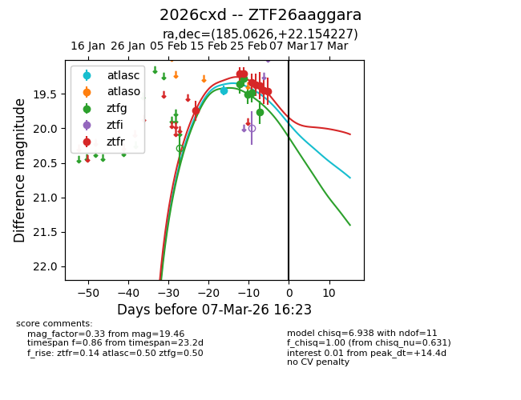
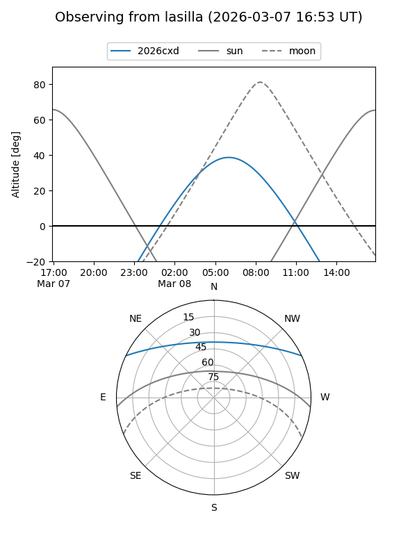
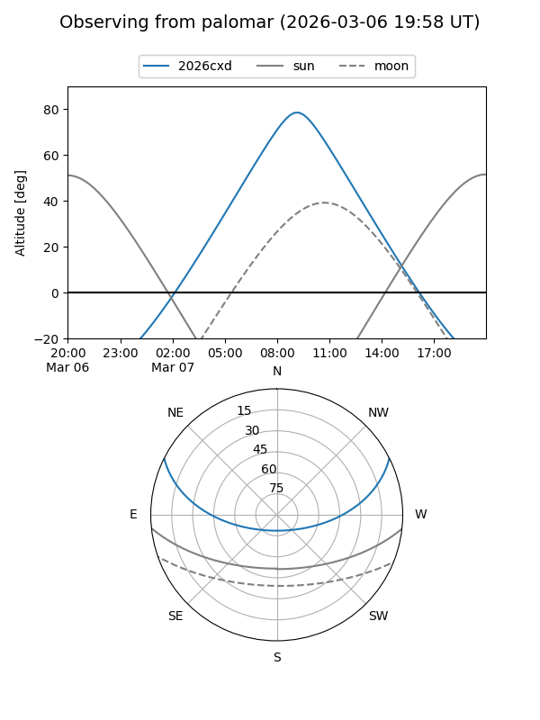
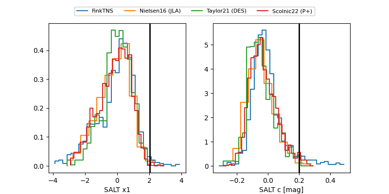

2026cxd
Target 2026cxd at 2026-03-07 16:24
Aliases and brokers:
FINK: link
Lasair: link
ALeRCE: link
TNS: link
YSE: link
alt names
ZTF26aaggara (ztf,fink_ztf)
2026cxd (tns,yse)
Coordinates:
equatorial (ra, dec) = 185.0626,+22.15423
equatorial (HMS+DMS) = 12:20:15.03,+22:09:15.22
galactic (l, b) = (246.3167,+81.34557)
Flags:
Photometry:
last atlasc=19.45, ztfg=19.77, ztfr=19.46
1 atlasc, 5 ztfg, 8 ztfr detections
Lightcurve

Visibility


Additional plots
